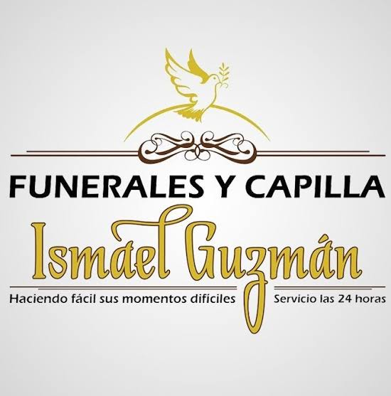

Atención inmediata las 24 horas
Brindamos servicios funerarios integrales y planes de previsión con la dignidad, el respeto y la calidez que tu familia merece.
Consultar Servicios por WhatsAppSoluciones integrales diseñadas para brindar apoyo en esos momentos difíciles.
Nos encargamos de cada detalle con absoluta profesionalidad y respeto:
Protege a los que más amas anticipándote con cuotas accesibles:
Contamos con una cuidada selección de elementos para honrar la memoria de sus seres queridos.
Variedad de diseños en caoba, roble y pino con acabados de alta calidad.
Arreglos florales solemnes, iluminación adecuada y capillas ardientes confortables.
Diseños sobrios en mármol, madera y bronce para procesos de cremación.